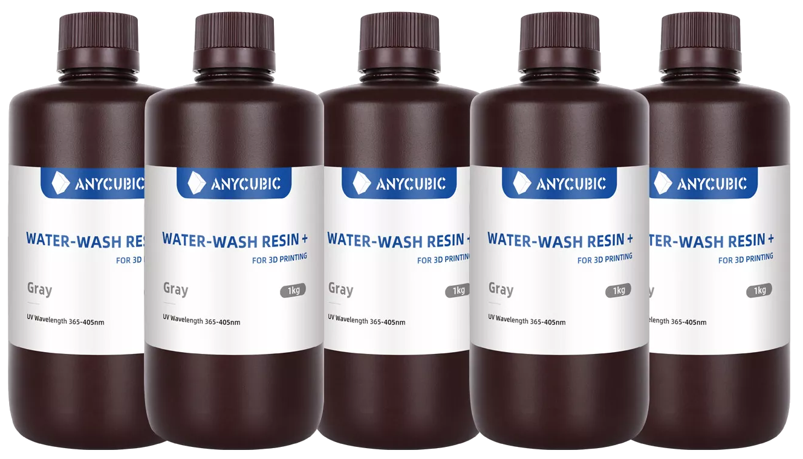

Thermoplaste (FDM-Druck)
Lichtempfindliche Harze (Resins) bieten präzise Druckergebnisse und glatte Oberflächen, was sie für detaillierte und ästhetische Objekte prädestiniert:
- Standardresin: Günstig, vielseitig und für allgemeine Anwendungen geeignet.
- Tough- oder Durable-Resin: Hält Belastungen stand, ideal für funktionale Prototypen.
- Flexible-Resin: Bietet Gummi-ähnliche Eigenschaften für flexible und stoßabsorbierende Teile.
- Biokompatibles Resin: Geeignet für medizinische Anwendungen wie Zahnschienen oder Implantatmodelle.
- Hochtemperaturresin: Widersteht hohen Temperaturen, ideal für technische Anwendungen oder Gussformen.